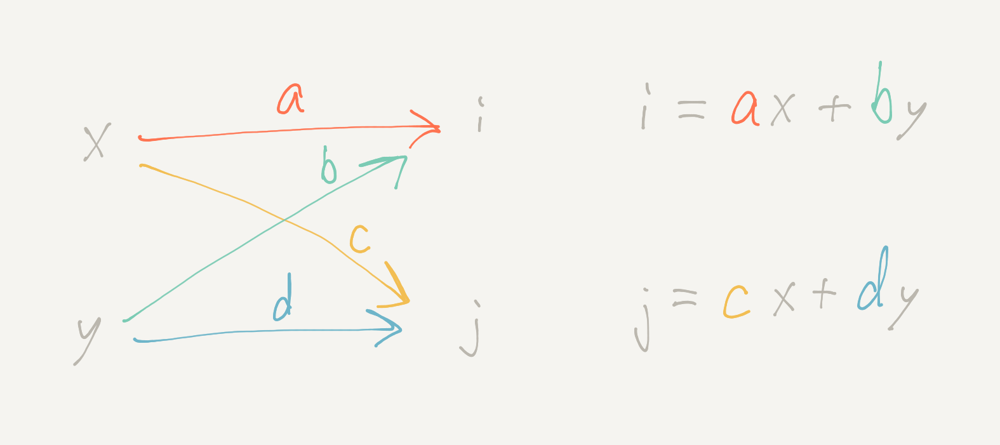
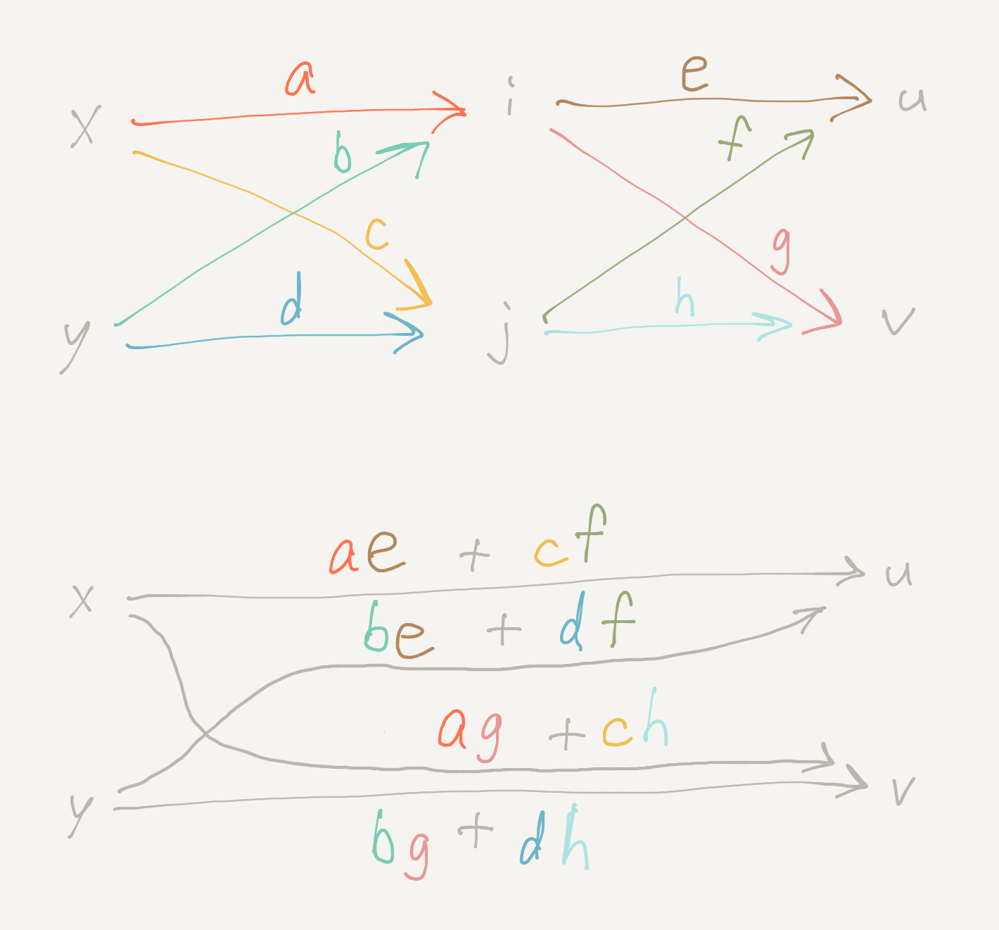

The flow metaphor for matrix multiplication
Wednesday September 15, 2021
“I cannot believe that anything so ugly as multiplication of matrices is an essential part of the scheme of nature.” (Arthur Eddington, 1936)
Even Strang introduces matrix multiplication by saying “there is only one possible rule, and I am not sure who discovered it. It makes everything work.” This is not satisfying or helpful for understanding. The flow metaphor of graphical linear algebra makes matrix multiplication seem natural and helps provide intuition for understanding linear algebra.
A simple diagram style
The inputs x and y pass from left to right along the arrow paths—getting multiplied by a, b, c, and d, respectively—and then adding up to outputs i and j.

The diagram is equivalent to the usual notation for a simple vector-matrix multiplication.
\[ \begin{bmatrix} i \\ j \end{bmatrix} = \begin{bmatrix} a & b \\ c & d \end{bmatrix} \begin{bmatrix} x \\ y \end{bmatrix} = \begin{bmatrix} ax+by \\ cx+dy \end{bmatrix} \]
You can visualize inputs entering at the top and outputs going out the side. For example, the x enters the 2-by-2 matrix over the a, and then exits to the left to contribute ax to i. The y enters over the b and exits to the left to contribute by to i.
Matrix multiplication
To compose two matrix diagrams, follow the paths from inputs to outputs. For example, to go from x to u, there's the ae path that goes via i, and there's the cf path that goes via j, so the simplified single path from x to u is ae + cf.

This is matrix multiplication that makes sense. After the input-output behavior above is established, there's no other way for matrix multiplication to come out.
\[ \begin{bmatrix} e & f \\ g & h \end{bmatrix} \begin{bmatrix} a & b \\ c & d \end{bmatrix} = \begin{bmatrix} ae+cf & be+df \\ ag+ch & bg+dh \end{bmatrix} \]
Why do the inner dimensions need to be the same for two matrices you're multiplying? Because you have to match up outputs from one with inputs for the other.
I find this metaphor really helpful, and I suspect it could help people learning linear algebra for the first time as well. I think it can be complementary with thinking about (and visualizing) vector spaces. Exposition might proceed from introducing the idea of linear combinations, to the diagram form, to the matrix notation, for example.
Aligning directions
I think it's a good thing that the diagrams make it obvious that order matters. I'd rather have both the diagrams and matrix notation read naturally from left to right, but I don't think everybody will change how they write their linear algebra.
There's nothing special about the usual orientation. Both directions are “on” by default. You can multiply a row vector and matrix, which is like going right to left along the diagram for the matrix. You can see the result isn't equivalent unless you transpose.
Transpose is the operation that swaps inputs with outputs For example, \( (A B)^T = B^T A^T \). Visualize rotating two connected pieces of pipe.
For a given order, sometimes it feels more natural to think about going left to right rather than right to left. For example, in the \( y = X \beta \) of linear regression, it feels better to me to think of moving a row of the data matrix \( X \) through the coefficient transformation \( \beta \), rather than thinking of the data \( X \) as transforming the coefficients. Either way.
Note also that a column vector is not the same as a row vector, and neither are the same as a vector. We probably shouldn't say a vector is any particular matrix.
Sources
I started thinking about this based on §3.2.2.4 in Spivak's Category Theory for the Sciences. A complete, rigorous formulation as Graphical Linear Algebra is nicely introduced in Sobocinski's blog. The best brief introduction I've seen is in a presentation from Paixão. (Thanks to Spivak and Sobocinski for helpful pointers over email as well!)
The quote at top from Sir Eddington about the ugliness of matrix multiplication is from page 36 of his Relativity Theory of Electrons and Protons, published in 1936 by Cambridge University Press, as quoted in Macedo and Oliveira's Typing linear algebra.
“So the way we normally teach linear algebra to students is we write down the formula for multiplying a matrix. Where does this formula come from? I mean everyone learns it in first year, right, so we don't question it, but it's actually very difficult to explain. I mean I have to teach linear algebra to first-year students and, you know, it takes them quite a bit of time to get it. And they learn it, they get it by memorizing, you know, these kinds of algorithms in their heads, but this is not the way we should teach maths. We shouldn't teach maths, you know, by telling people to memorize algorithms.” (Sobocinski)